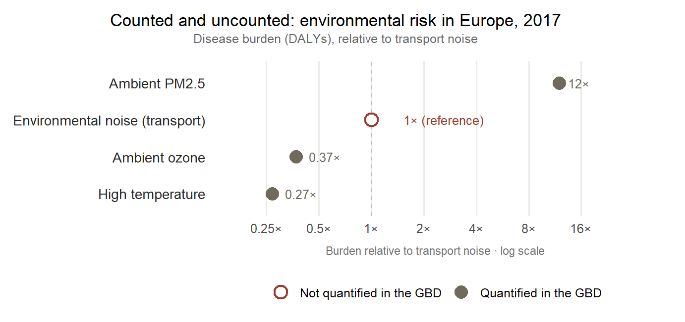

What is old and still dominant matters more here than what is new. Road, rail and air traffic account for the overwhelming majority of Europeans exposed above the reporting thresholds, and no amount of novelty in heat pumps or data centres changes that arithmetic in the near term. Setting this baseline first allows the transition’s genuine acoustic surprises to be seen for what they are, a rearrangement at the margins of a burden whose centre remains the internal-combustion street. Three claims follow, on which the rest of Part II depends: the transport modes, though grouped together on the map as traffic, are not one source but three; a decibel of one is not a decibel of another; and the annual average by which all of them are assessed hides much of what makes traffic unliveable — the night-time event, the seasonal surge, and the corner where several sources meet at once.
5.1 The scale of it
The numbers are lopsided, and the lopsidedness is the first thing to hold onto. Of the transport noise the European Environment Agency records, road traffic is overwhelmingly the largest source. On its 2022 reporting round, some 92 million people across Europe are exposed to road noise above the Directive’s 55 dB \(L_\text{den}\) threshold, against roughly 18 million for railways and about 2.6 million for aircraft (European Environment Agency, 2025). Taken together, more than 110 million Europeans — over a fifth of the population — live above the END thresholds, and measured against the stricter WHO guideline levels the figure rises to around 150 million, nearly one in three (European Environment Agency, 2025). Road noise is not merely first among the transport sources; it is larger than the others by an order of magnitude, and it is the source most concentrated where people are densest.
Source · European Environment Agency, Environmental noise in Europe 2025 (2022 reporting round under Directive 2002/49/EC) (European Environment Agency, 2025). Reported/estimated real data; the 2022 dataset is ~84 % complete with gap-filling. Accessed 2026-07-13.
This is the baseline the rest of Part II is measured against. It does not mean that the newer sources are trivial. A source can matter out of all proportion to the number of people it reaches. But it does mean that the headline burden of environmental noise in Europe remains, for now, a road-traffic burden, and that a book about changing acoustic worlds must resist the temptation to mistake the novel for the large. The heat pump and the data centre are coming; the motorway is already here, under far more windows.
NoteA European figure, for a reason
The numbers above are European not because Europe is the noisiest place on earth but because it is among the few that systematically measure. The Environmental Noise Directive obliges member states to map transport noise on a five-yearly cycle; most of the world is under no such duty, and produces no comparable account. Environmental noise sits outside the Global Burden of Disease framework altogether, and the harmonised burden estimates that feed even global environmental reviews are, in practice, the EEA’s European figures extrapolated for want of anything else (Clark et al., 2025; European Environment Agency, 2025).
The asymmetry is sharper than a simple omission. Noise is counted when it is occupational, since exposure at work sits inside the framework’s occupational-risks category, and uncounted when it is environmental. The same physical agent is admitted to the ledger in one setting and absent from it in the other (Clark et al., 2025).
The consequence is easy to misread. The blankness of the world map beyond Europe is not a finding of quiet; it is the absence of an instrument. As discussed in Chapter 4, a noise map records where the measuring has been done — and the places it leaves silent are silent only on the map.
Show the code for this figure
library(dplyr)library(forcats)library(ggplot2)## Ratios taken verbatim from Clark, Anenberg & Brauer (2025), Annual Review of## Public Health 46(1):233-251, doi:10.1146/annurev-publhealth-071823-105338,## section "Environmental Noise". Setting EEA estimates against GBD estimates for## the same region and period (Europe, 2017), the authors report that DALYs lost## to transport noise (~1 million per year) are about 12 times LOWER than those## from ambient PM2.5, 3.7 times HIGHER than those from high temperature, and## 2.7 times HIGHER than those from ambient ozone. The values below are those## stated ratios, expressed relative to transport noise = 1; no absolute figure## is reconstructed. PM2.5, ozone and high temperature are quantified in GBD 2021## (Table 1 of the same source); environmental noise is not.## Accessed 14 July 2026.ledger <-tibble(risk =c("Ambient PM2.5", "Environmental noise (transport)","Ambient ozone", "High temperature"),ratio =c(12, 1, 1/2.7, 1/3.7),label =c("12×", "1× (reference)", "0.37×", "0.27×"),counted =c("Quantified in the GBD", "Not quantified in the GBD","Quantified in the GBD", "Quantified in the GBD")) |>mutate(risk =fct_reorder(risk, ratio))pal <-c("Quantified in the GBD"="#6f6a5c","Not quantified in the GBD"="#9a3b2e")ggplot(ledger, aes(x = ratio, y = risk, colour = counted, shape = counted)) +geom_vline(xintercept =1, linetype ="dashed",colour ="#c8bfa9", linewidth =0.5) +geom_point(size =4, stroke =1.2, fill ="white") +geom_text(aes(label = label), hjust =-0.4, size =3.4, show.legend =FALSE) +scale_x_log10(limits =c(0.16, 34), breaks =c(0.25, 0.5, 1, 2, 4, 8, 16),labels =function(x) paste0(x, "×")) +scale_colour_manual(values = pal) +scale_shape_manual(values =c("Quantified in the GBD"=16,"Not quantified in the GBD"=21)) +labs(title ="Counted and uncounted: environmental risk in Europe, 2017",subtitle ="Disease burden (DALYs), relative to transport noise",x ="Burden relative to transport noise · log scale", y =NULL,colour =NULL, shape =NULL) +theme_minimal(base_size =12) +theme(plot.title.position ="plot",plot.title =element_text(size =13, hjust =0.5,margin =margin(b =3)),plot.subtitle =element_text(size =9.5, hjust =0.5,colour ="grey40",margin =margin(b =12)),panel.grid.major.y =element_blank(),panel.grid.minor =element_blank(),axis.text.y =element_text(size =10.5, colour ="grey15"),axis.title.x =element_text(size =8.5, colour ="grey45",margin =margin(t =8)),legend.position ="bottom",legend.text =element_text(size =9.5),plot.margin =margin(10, 20, 8, 10))

Figure 5.1: Disease burden in Europe (2017), relative to transport noise. Setting EEA against GBD estimates for the same region and period, transport noise costs Europe roughly a million DALYs a year — some twelve times less than ambient fine particulates, but 2.7 times more than ambient ozone and 3.7 times more than high temperature. The Global Burden of Disease study quantifies all three of those; it does not quantify noise (Clark et al., 2025).
5.2 Three modes, not one source
Grouping road, rail and air under a single word flatters the tidiness of the map and obscures the physics. The three modes differ first in the shape of the sound over time.Road traffic, in any busy street, approximates a continuous hum, a great many small sources blurring into a steady background that rises and falls with the hour but rarely stops. Railways and aircraft do the opposite. They deliver their energy in discrete, high-level events — a train’s passage, an aircraft’s approach — separated by comparative quiet. Two locations can share an identical long-term average and yet present entirely different acoustic lives, the one a level drone, the other a sequence of intrusions against silence.
That difference is not cosmetic, because the body responds to events, not only to averages. The sudden arousal, the cortical flicker and autonomic surge described in Chapter 3, is what fragments sleep, and an intermittent peak is far better at producing one than a steady sound of the same mean level. The systematic review underpinning the WHO guidelines found that transportation noise disturbs sleep across all three modes, with the discrete night-time events of aircraft and freight rail particularly effective at provoking the awakenings the sleeper never remembers (Basner & McGuire, 2018). The modes differ spectrally too: the low rumble of an aircraft on approach, the wheel-on-rail whine and freight-wagon clatter of a railway, the tyre-and-engine blend of a road. Those differences feed forward into the distributional question of which populations live with which sound, the business of Chapter 9. The modes are genuinely distinct hazards wearing a shared name, and the single averaged number that ranks them is already straining to hold three different things at once.
5.3 A decibel is not a decibel
If the modes differ in their sound, they differ still more in how much that sound is resented. The relationship between exposure and annoyance is not the same for the three sources. Drawing together dozens of socio-acoustic surveys for the WHO guidelines, Guski and colleagues derived exposure–response functions relating the day–evening–night level to the percentage of residents highly annoyed. The functions do not coincide. At any given level, aircraft noise is markedly more annoying than road, which in turn tracks close to rail (Guski et al., 2017). The gap is large where it matters. The WHO’s benchmark level of concern — the exposure at which one in ten residents is highly annoyed — is reached at about 53 dB for road traffic and 54 dB for rail, but at roughly 45 dB for aircraft. An aircraft needs to be some eight or nine decibels quieter than a road to provoke the same annoyance in the same number of people.
These are not academic curiosities. The functions were adopted, effectively verbatim, into the Environmental Noise Directive’s own assessment methods by Commission Directive (EU) 2020/367 (European Commission, 2020), so they are the relations by which Europe’s official health-impact estimates are made (Guski et al., 2017). All three are plotted in the calculator below, and at any level the reader chooses the aircraft curve stands well clear of the other two.
Source · %HA exposure-response functions for road, rail and aircraft per Directive (EU) 2020/367, Annex III, after Guski et al. (2017) (WHO ENG systematic review); 10 % highly-annoyed benchmark per WHO 2018. Accessed 2026-07-13.
One nuance the calculator preserves corrects a piece of received wisdom. For decades the field spoke of a railway bonus: the observation, built into older annoyance curves, that rail at a given level was appreciably less annoying than road, on the reasoning that a predictable train is easier to live with than the churn of traffic. The WHO 2018 evidence complicates that story. On the adopted curves, road and rail run close together and cross near 54 dB, with rail slightly the more annoying above that level; the comfortable old bonus is not what the newer data show. The nuance matters methodologically. Neither mode is villain or benign; the finding is that equal decibels conceal unequal harm, and in a direction the single number cannot reveal.
5.4 The average and the event
Everything so far has taken the exposure figure at face value. It is time not to. \(L_\text{den}\), the indicator on which the whole apparatus rests, is an annual average, an energy mean spread across every hour of every day of a representative year (European Parliament and Council of the European Union, 2002). That is a reasonable way to compare cities and a poor way to describe a life, because a life is lived in particular hours, and the average is built precisely to dissolve them. Two failures of the average recur in the traffic case, and both matter more than the headline figure.
The first is seasonal and weekly. Consider the suburban railway that runs down the Costa del Sol from Málaga to Fuengirola — the line whose fourth-round strategic map plots a smooth band of \(L_\text{den}\) past the regional hospital and a string of schools (ADIF, 2023). A commuter and holiday line of that kind does not run at its annual mean. It swells in summer and empties in winter, peaks at the start and end of the working day and again at the weekend, and carries its heaviest, longest trains — freight and full commuter sets — at hours that never appear on a yearly average. The map’s single colour past a hospital window is faithful to the year and false to the August timetable; the surge that keeps a light sleeper awake in July is, by construction, invisible in a figure that has already been divided by twelve months.
The second failure is sharper still, and it belongs to the road. A modern car or motorcycle passes its type-approval noise test and then, on the street, sounds nothing like it. Manufacturers meet the drive-by limit with moveable exhaust valves that quieten the vehicle for the test and open afterwards, and a large aftermarket exists to fit louder pipes to motorcycles and sports cars whose stock silencers are easily removed (Intertraffic, 2024). The result is a class of vehicle whose single pass-by can exceed the surrounding traffic by a wide margin — and a handful of such pass-bys, scattered through the night, is enough to ruin sleep for a street, while barely moving the annual average that governs the map. The pattern is not anecdotal. Where automated noise cameras have been installed to catch these vehicles, the great majority of violations fall between seven in the evening and three in the morning, with the load spiking at weekends (Johnson, 2023). Regulation has been slow to follow. The type-approval limit governs the vehicle at the moment of sale and does little about what an owner does to it afterwards, and only now are cities — Paris, New York, London among them — trialling acoustic cameras that pair a microphone array with a number-plate reader to fine the individual loud event (Intertraffic, 2024; Johnson, 2023). The governance of this gap is the concern of Chapter 11; what matters here is acoustic. The metric that ranks the street by its yearly mean is deaf to the very events — the two-in-the-morning exhaust, the freight train in August — that decide whether the people on it can sleep.
5.5 Where the sources meet
The average erases the event in time; the method erases the sum in space. A strategic map computes each source on its own — this road, that railway, the airport yonder — and reports them separately, because the Directive’s obligations and the propagation model are organised source by source (European Parliament and Council of the European Union, 2002). But sound does not respect that bookkeeping. At the many points where sources coincide, their energies add: a receiver exposed to two equal sources hears roughly three decibels more than either alone, and the façade on a corner where a road, a tram and the traffic drawn to a shopping centre all converge carries the sum of them, not the largest.
Granada furnishes the case, because its light-rail Metropolitano, a fifteen-kilometre line running some four-fifths of its length at street level, was mapped in the fourth strategic round as a source in isolation. On its own the tram is not especially loud. The surface stretch is estimated to expose only about 1,190 residents to \(L_\text{den}\) above 55 dB, and the map’s zones of conflict, the report notes plainly, coincide almost exactly with the lanes of adjacent road traffic already there (Junta de Andalucía, 2022). That coincidence is the whole point. The resident on such a corridor does not experience a tram map and a road map; they experience a tram and a road and the cars circling for the centre’s car park, summed at one window, at hours the two annual averages were never added together to describe. A neighbourhood that before the line and the centre could pass an evening in relative calm is now, in the aggregate the maps decline to compute, worn down by a near-continuous load — each source individually within its limit, the sum of them not accounted anywhere.
The same infrastructure compounds the harm by a second route that is not, strictly, acoustic. A surface rail line or a widened arterial is also a physical barrier: it severs the neighbourhood, forcing pedestrians to a handful of crossings and lengthening every local trip, an effect the transport literature calls community severance and links to suppressed walking and greater car dependence (Anciaes et al., 2016). The feedback closes on the noise. Residents cut off by the corridor drive more, and the extra private traffic adds to the very road noise the corridor already carries. And because the street is narrow and hard-walled where these arteries thread an old quarter, the canyon effect of Chapter 4 amplifies the sum still further, reflecting it back onto the façades several times over. The map sees a set of tidy, separate, compliant sources; the resident lives at their intersection.
5.6 The giant is not shrinking fast enough
For all the attention noise now receives, the road giant is not receding on the timetable the European Union has set itself. Progress in reducing exposure has been slow, and the zero-pollution objective is to cut the number of people chronically disturbed by transport noise by 30 % by 2030, against a 2017 baseline; the EEA judges it unlikely to be met without additional measures (European Environment Agency, 2025). Fleets turn over slowly, traffic volumes climb, the reductions delivered by quieter vehicles and surfaces are partly offset by growth, and the enforcement tools for the loudest offenders are only now being trialled. The dominant source is also the most stubborn.
There is, though, a twist in the trajectory. The decarbonising fleet was supposed to bring quiet as a free dividend — the combustion roar simply subsiding — and in part it will. But the electric street does not fall silent so much as change its voice. The tyre and road noise that dominates above city speeds does not disappear with the engine, and new residential sources arrive to fill the spectrum the engine vacates. The giant is shrinking too slowly to meet the target, and even as it shrinks it is being joined. Next comes that rearrangement — the quiet that wasn’t.
ADIF. (2023). Mapa estratégico de ruido, cuarta fase (grandes ejes ferroviarios): UME 04_03 málaga centro/alameda–fuengirola, indicador lden. ADIF – Administrador de Infraestructuras Ferroviarias.
Anciaes, P. R., Jones, P., & Mindell, J. S. (2016). Community severance: Where is it found and at what cost? Transport Reviews, 36(3), 293–317. https://doi.org/10.1080/01441647.2015.1077286
Basner, M., & McGuire, S. (2018). WHO environmental noise guidelines for the European region: A systematic review on environmental noise and effects on sleep. International Journal of Environmental Research and Public Health, 15(3), 519. https://doi.org/10.3390/ijerph15030519
European Commission. (2020). Commission directive (EU) 2020/367 amending annex III to directive 2002/49/EC as regards assessment methods for harmful effects of environmental noise. Official Journal of the European Union L 67, 5.3.2020, pp. 132–136. https://eur-lex.europa.eu/eli/dir/2020/367/oj
European Parliament and Council of the European Union. (2002). Directive 2002/49/EC of 25 june 2002 relating to the assessment and management of environmental noise. Official Journal of the European Union, L 189, 18.7.2002, pp. 12–25. https://eur-lex.europa.eu/eli/dir/2002/49/oj
Guski, R., Schreckenberg, D., & Schuemer, R. (2017). WHO environmental noise guidelines for the European region: A systematic review on environmental noise and annoyance. International Journal of Environmental Research and Public Health, 14(12), 1539. https://doi.org/10.3390/ijerph14121539